Lab 3 - Structure from Motion
(Left: 3D mesh of head reconstructed from a sequence of 60 orthographic images. Middle: Sequence of tracked feature points on ground truth mesh viewed from an orthographic camera. Right: Fill matrix visualization showing gradual accumulation of observations across frames (shaded entries are known image coordinates))
Overview
In this assignment will implement an affine factorization method for structure from motion, you will then extend it to handle missing data (occlusions) via matrix completion, and perform a metric upgrade to recover the true Euclidean structure. You will test your implementation on provided datasets and on your own videos, and document your results with code, figures, and analysis.
1: Affine Factorization Method (30)
Background: The affine factorization algorithm (described in Section 18.2 in Hartley & Zisserman, 2nd ed.) implements the Tomasi–Kanade method for Structure from Motion under an orthographic projection assumption.
The key insight is that when tracking \(P\) feature points across \(F\) frames (views), the resulting \(2F \times P\) measurement matrix will have rank 3 for a rigid scene under orthographic projection, after proper normalization (centering). This matrix can be factored into motion and shape matrices via Singular Value Decomposition (SVD).
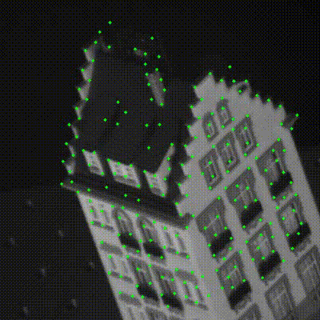
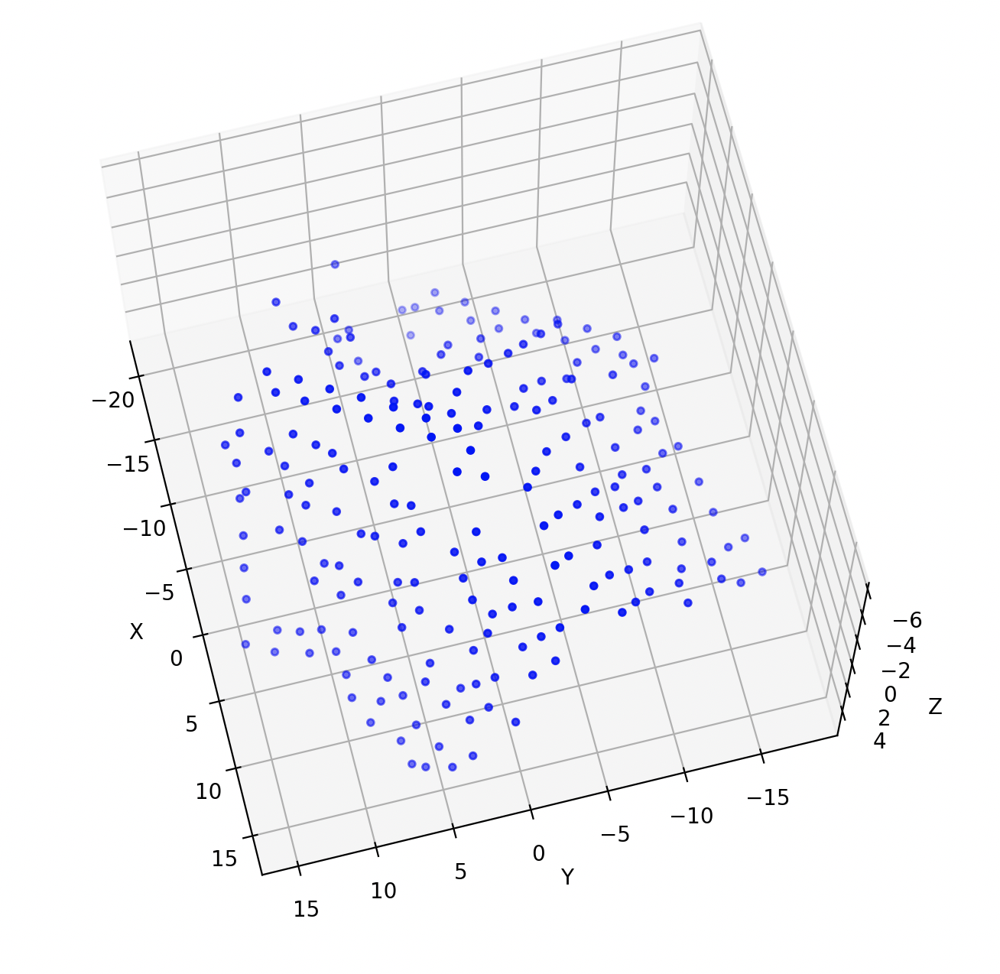
(Left: The classic 101-frame Hotel sequence by Tomasi. Right: Example of a 3D reconstruction output. Data available at: https://slazebni.cs.illinois.edu/fall22/assignment5.html)
Task:
Implement the affine structure-from-motion algorithm following the procedure from Lecture 07 (slides 27–30) or the textbook:
- Form the measurement matrix \(W\) using tracked feature coordinates:
- Normalize the data by subtracting the mean from each row (i.e., each image’s \(x\) and \(y\) coordinates)
- This centering removes the translational motion and ensures \(W\) is of rank 3 in the noise-free case
- Perform singular value decomposition: \(W \approx U \Sigma V^T\)
- Take the top 3 singular values and corresponding vectors (because the ideal rank is 3)
- Extract \(U_0\) (size \(2F \times 3\)), \(\Sigma_0\) (\(3 \times 3\)), and \(V_0\) (\(P \times 3\))
- Factor into motion and shape matrices:
- Initialize the motion matrix as \(R = U_0 \Sigma_0^{1/2}\)
- Initialize the shape matrix as \(S = \Sigma_0^{1/2} V_0^T\)
At this point, \(W \approx R S\) gives an affine reconstruction of the cameras (in \(R\)) and 3D points (in \(S\)). Note that this reconstruction is not unique – any \(3 \times 3\) invertible transform \(Q\) gives an equivalent solution \(RQ\) and \(Q^{-1}S\).
Submission Requirements
Using the provided data, and a short video recorded yourself do the following and include it in your report:
- Plot the recovered 3D point cloud (structure \(S\))
- Visualize the camera positions/orientations (rows of \(R\)) in 3D
Tools Provided & Resources
\begin{itemize} \item A video tracker with globally optimized feature tracking for high precision feature tracking. \item A python script for generating orthographic video from a 3D model. \item Textured 3D models: \href{http://kunzhou.net/tex-models.htm}{http://kunzhou.net/tex-models.htm} \item All the code: \href{https://drive.google.com/drive/folders/1bumUAnZhOPYdLX_gwY3BE_Qovm_3tapZ?usp=sharing}{https://drive.google.com/drive/folders/1bumUAnZhOPYdLX_gwY3BE_Qovm_3tapZ?usp=sharing} \end{itemize}
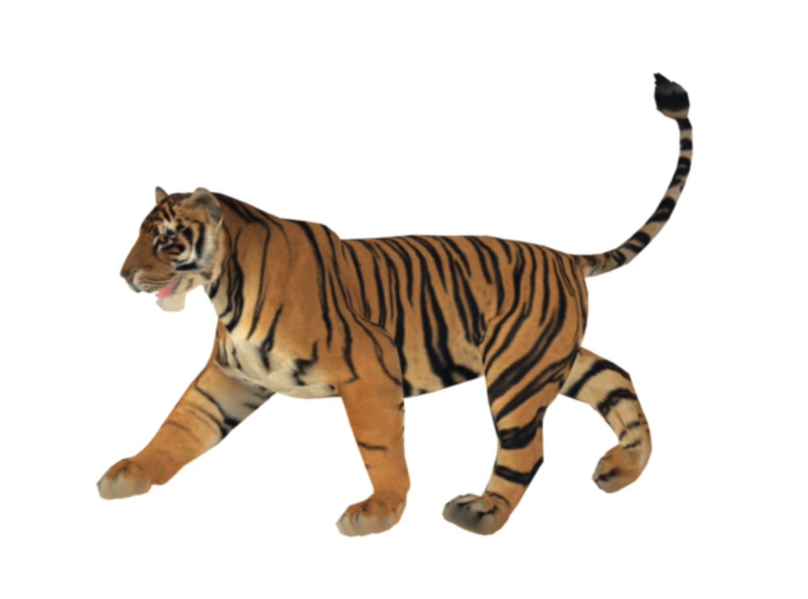
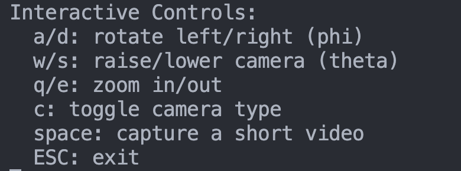
Report Questions
In your report, discuss what happens when applying this method to your own video data. Note that real cameras are projective, not orthographic, so your method might not perfectly reconstruct real video data. Analyze the differences and limitations you observe.
2: Metric Upgrade (Euclidean Reconstruction) (30)
The factorization method you implemented in Part 1 yields a reconstruction that is affine – meaning it’s determined only up to an arbitrary linear transformation in 3D space. To recover the true Euclidean structure (up to a scale factor), we need to enforce that camera motions correspond to orthonormal rotations. This refinement process is known as the metric upgrade or affine to metric calibration.
In this question, you will implement the metric upgrade procedure to transform your affine reconstruction into a Euclidean one. You will then use a known scale factor between feature points to properly scale your reconstructed model to real-world dimensions.
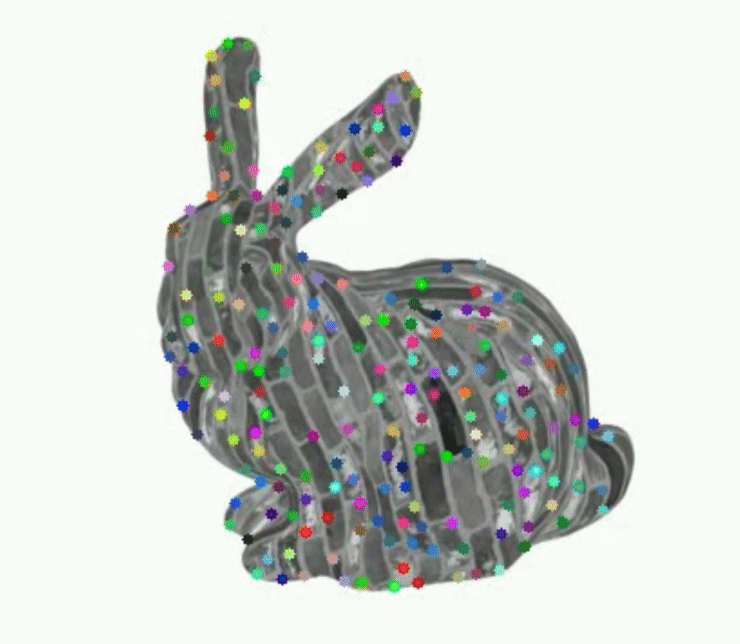
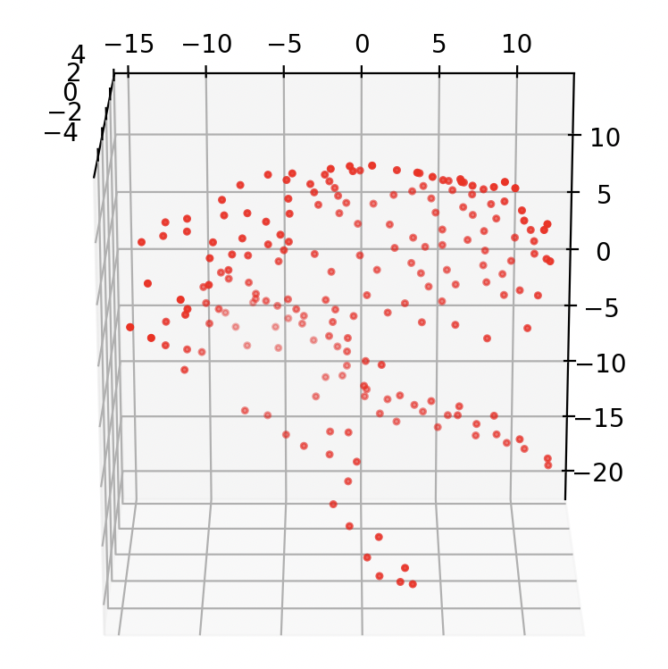
(Left: Orthographic image sequence with tracked features Right: Resulting Euclidean reconstruction)
a) Derive the Orthonormality Constraints
Suppose the \(i\)-th camera has affine motion represented by the two 3D row vectors \(r_{i1}\) and \(r_{i2}\) (from the \(R\) matrix). For a real rotation, we require: \(\begin{align} r_{i1} \cdot r_{i1}^T &= 1 \\ r_{i2} \cdot r_{i2}^T &= 1 \\ r_{i1} \cdot r_{i2}^T &= 0 \end{align}\) These constraints can be written in terms of the unknown metric upgrade matrix \(L = QQ^T\) (a symmetric \(3\times3\) matrix):
- For the first constraint: \(r_{i1} L r_{i1}^T = 1\)
- For the second constraint: \(r_{i2} L r_{i2}^T = 1\)
- For the third constraint: \(r_{i1} L r_{i2}^T = 0\)
Write out these equations for all cameras, resulting in at most \(3F\) equations (3 per frame) for the 6 independent entries of \(L\) (since \(L\) is symmetric).
b) Solve for the Upgrade Matrix
Arrange the constraints into a linear system \(AL = b\) where:
- \(A\) is a matrix containing coefficients from the constraints
- \(L\) is a vector of the 6 independent entries of the symmetric matrix \(L\)
- \(b\) is a vector with entries 1, 1, 0, … for each camera’s constraints
Solve this system using linear least-squares to find the \(L\) that best satisfies all equations.
c). Compute the Upgrade Transformation
Once you have \(L \approx QQ^T\):
- Perform a Cholesky decomposition or eigen-decomposition to obtain \(Q\)
- You may need to create a positive definite approximation if \(L\) has negative or zero eigenvalues due to noise
- One approach is to perform eigen-decomposition, set any negative eigenvalues to a small positive value, and reconstruct \(L\)
- Apply \(Q\) to the affine reconstruction to get the Euclidean reconstruction:
- \[R_{\text{euclid}} = R_{\text{affine}} Q\]
- \[S_{\text{euclid}} = Q^{-1} S_{\text{affine}}\]
Now \(R_{\text{euclid}}\) should represent valid rotation matrices (scaled) and \(S_{\text{euclid}}\) is the structure in Euclidean space (up to an overall scale factor).
d) Apply Absolute Scale Calibration
To obtain a model with real-world dimensions, you need to use known physical measurements between feature points. Use The figure below to calibrate the scale of your Hotel reconstruction from Part 1:
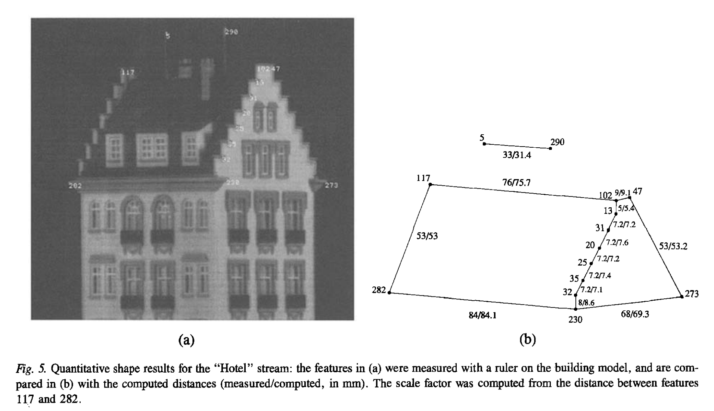
(Image from “Shape and Motion from Image Streams under Orthography: A Factorization Method” (IJCV 1992))
- Identify reference points: Select two or more feature points in your reconstruction where you know the actual physical distance between them. For example:
- Compute the scale factor:
- Let \(d_{real}\) be the known real-world distance between your reference points
- Let \(d_{recon}\) be the corresponding distance in your reconstructed model
- The scale factor is then \(s = d_{real} / d_{recon}\)
- Apply the scale:
- Scale your Euclidean reconstruction: \(S_{scaled} = s \times S_{euclid}\)
- Verification:
- Measure other known distances in your scaled model to verify the accuracy
Your final scaled reconstruction should now have proper real-world dimensions, allowing for ‘accurate’ measurements and integration with other 3D models or systems.
Bonus (5 points)
- Perform the same metric upgrade on your own video (this can be the same video you captured for Question 1). Include the 3D metric reconstruction in your report, and evaluate its accuracy
Report Questions
In your report, include:
- Visualization of the 3D reconstruction before and after the metric upgrade
- Analysis of how the metric upgrade affects the quality of the reconstruction. How good are your between reconstructed distances compaird to the known distances?
3: Handling Missing Data (Matrix Completion) (40)
In practice, not all feature points are visible in all frames – points may disappear due to occlusion or tracking loss. The basic factorization method in part 1 & 2 requires a complete measurement matrix, so we want to extend it to handle missing entries.
The approach you will implement is based on Tomasi and Kanade’s paper “Shape and Motion from Image Streams under Orthography: A Factorization Method” (IJCV 1992), which proposes an iterative strategy to handle occlusions. The idea is to start with initial estimates for the missing values, factorize the matrix, and then gradually refine the estimates by leveraging the low-rank structure of \(W\).
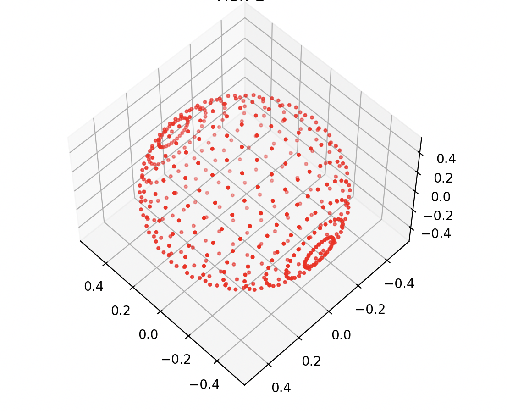
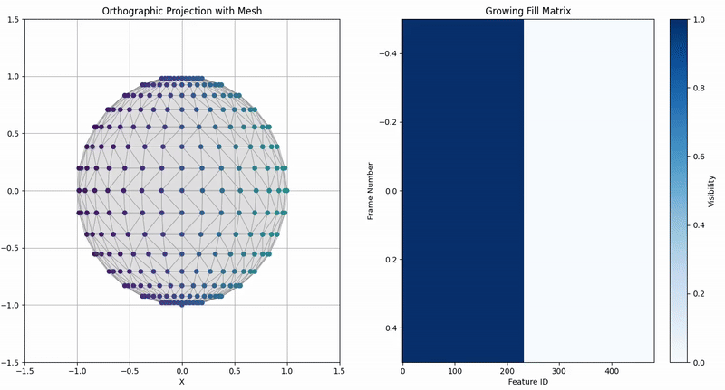
(Left: Reconstructed sphere from a sequence of orthographic images. Right: Orthographic image sequence and Fill matrix visualization showing gradual accumulation of observations across frames (shaded entries are known image coordinates))
Key concept: Define a fill matrix (or mask matrix) of the same size as \(W\), with entries:
- 1 for observed measurements
- 0 for missing ones The fill matrix lets us compute errors or updates only on observed entries while ignoring missing ones during the optimization process.
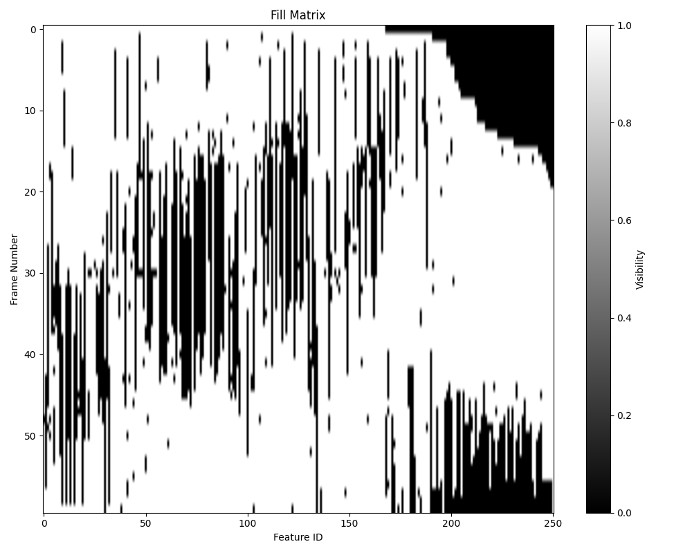
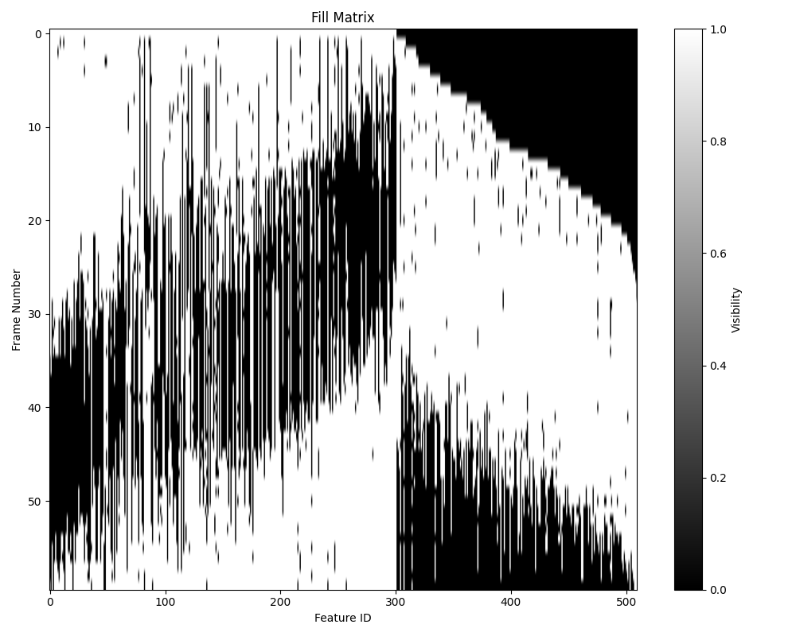
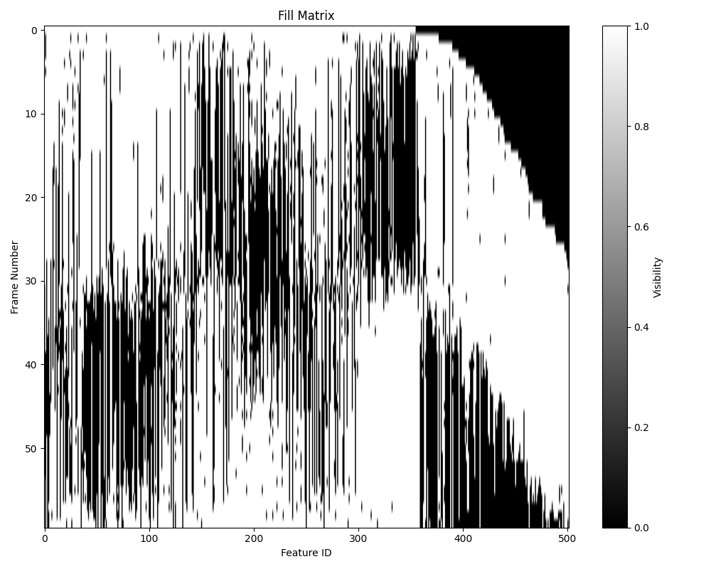
(Examples of fill matrices for various 3D models (shaded entries are known image coordinates). features are identified )
Task:
Implement matrix completion for Structure from Motion using the iterative factorization approach:
- Initialize missing entries in the measurement matrix:
- For each point with missing observations, fill in the gaps with reasonable estimates (e.g., the mean of that point’s observed projections across frames)
- Center the data by removing per-camera translation (row-wise centering)
- Perform initial factorization using SVD to obtain rank-3 approximation:
- Decompose the filled measurement matrix into motion matrix \(M\) and shape matrix \(S\)
- Iterative refinement:
- Project the current estimates to reconstruct the measurement matrix: \(W_{recon} = M \times S\)
- Replace the reconstructed values at known positions with the original measurements (using the fill matrix)
- Re-factorize using SVD to obtain updated \(M\) and \(S\)
- Compute reconstruction error over known entries
- Repeat until convergence or maximum iterations reached
- Metric upgrade:
- Enforce orthonormality constraints on the camera rows
- Apply the appropriate transformation to recover the motion and shape matrices
Submission Requirements
Test your implementation on the provided datasets (Cow, Stanford Bunny, Horse sequences) do the following and include it in your report:
- Plot the recovered 3D point cloud (structure \(S\))
- Visualize the camera positions/orientations (rows of \(R\)) in 3D
- Analyze the quality of reconstruction
Bonus (5):
- Mesh your resulting 3D point cloud and include it in your report. Describe the meshing algorithm you implemented or library you utilized (e.g., Ball-Pivoting, Poisson Surface Reconstruction, Alpha Shapes). Explain why you selected this particular meshing approach and its suitability for the structure-from-motion point clouds.
Tools Provided & Resources
- More 3D models: https://github.com/alecjacobson/common-3d-test-models/tree/master
- A python script for generating your own weight matrix from a mesh
- A python script for down sampling a mesh
Report Questions
- Why can’t we directly apply SVD to a matrix with missing entries?
- How does the low-rank assumption allow us to recover missing values?
- Explain the role of the fill matrix in computing reprojection error or updates.
- Compare the convergence behavior for different datasets. How many iterations were needed? Did the error decrease smoothly?